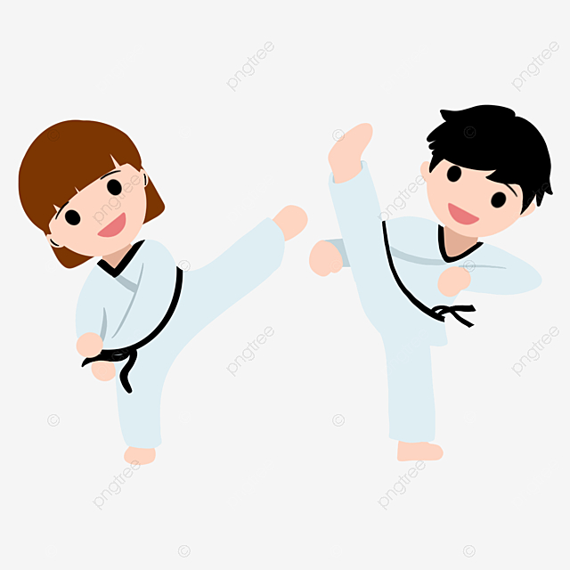

跆拳道是源自朝鮮的格鬥術，名稱來源於韓語的「跆」：運用腳來進行攻擊、防守及馬步等技術，「拳」：運用手來進行的攻擊及防守等技術， 「道」：練武者對武術的心靈修養及修正。可強身健體，又能防身自衛的傳統搏擊武術。以技擊格鬥為基礎，修心養性為核心，跆拳道可磨練意志，振奮內在精神，更能培養良好禮儀及道德。 跆拳道以「級」、「品」、「段」嚴格劃分技術等級，腰帶顏色來區分級別：白帶為 9 級，之後等級晉升依序為， 8 級為黃帶、 7 級為黃藍帶、 6 級為藍帶、 5 級為藍紅帶、 4 級為紅帶、 3 級為紅帶黑一線、 2 級為紅帶黑二線、 1 級為紅黑帶， 1 級以後入「段」，段位從低到高分為一至九段，為黑帶。 40 世紀的埃及，且在古代奧運中，拳擊比賽就已經被列為正式比賽項目之一，但 1896 年第一屆奧運會因希臘君王認為拳擊太過暴力，未將拳擊比賽列為比賽項目，直到 1904 年第三屆奧運會才將它列為正式比賽項目，但第五屆奧運會因瑞典法律禁止拳擊運動，拳擊比賽又因此消失在奧運會項目中，直到 1920 年拳擊比賽才又出現在奧運比賽項目中，並一直維持到現在。
